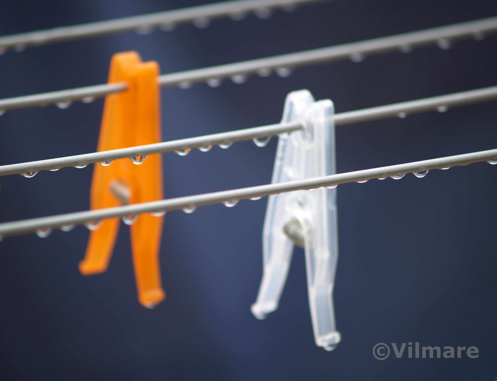

“Always follow your passions.
Do not ask if they are realistic or not.”-Deepak Chopra
Things I love to create
Digital photography

Insignificant elements captured in the framing of a photograph may acquire the beauty of a poem.
blue morning, close
but not fastened, without
hands to touch us, without
ground we fear the
wind, and it cries the
rain for us.
Lia Lotti
Rain
Hanging by a thread in theblue morning, close
but not fastened, without
hands to touch us, without
ground we fear the
wind, and it cries the
rain for us.
Lia Lotti
Gallery


Macchie di colore

The quest for expression is the common thread of my life.
The moments when I’ve found the means and ways to express an emotion, a feeling... those have been good moments to remember.
I’ve always been interested in Photography, as a means of expression.
Although I am aware of the importance of the theoretical knowledge of an instrument in order to get the best use of it, I constantly forget every rule I learned and use the camera in an instinctive way. Only by doing this I am able to capture in that rectangular space an image that moves and satisfies me.
Macchie di Colore are photos I took in a period of experimental and instinctive use of the camera.
The moments when I’ve found the means and ways to express an emotion, a feeling... those have been good moments to remember.
I’ve always been interested in Photography, as a means of expression.
Although I am aware of the importance of the theoretical knowledge of an instrument in order to get the best use of it, I constantly forget every rule I learned and use the camera in an instinctive way. Only by doing this I am able to capture in that rectangular space an image that moves and satisfies me.
Macchie di Colore are photos I took in a period of experimental and instinctive use of the camera.
 Passion
PassionPassion
 Nostalgia
NostalgiaNostalgia
 City
CityCity
 Sound
SoundSound
 Leaf
LeafLeaf
 Fly
FlyFly
 People
PeoplePeople
Women togetherWomen together

Video
Little Leaf is the metaphorical history of a leaf that dreams to visit new places, far from the small forest where she is born.
She feels safe at home but after a while she gets bored and asks the Wind to bring her with him to visit the World. He pleases her so she flies high, over the mountains, the farms, the lakes and the rivers until she reaches the City.
After a while the Sounds become aloud, Things move too fast, she feels herself in danger and desires to go back. There is no Wind to help her out this time.
Swowly Desire becomes Nostalgia.
Nostalgia is that feeling that happens when it’s impossible to go back where we want, and what if we desire something that’s never been real other than in the imaginary world of a child?
For this video I have combined normal footage with still images from the 'Macchie di colore' group.
Music from Litfiba "Eroi nel vento".
She feels safe at home but after a while she gets bored and asks the Wind to bring her with him to visit the World. He pleases her so she flies high, over the mountains, the farms, the lakes and the rivers until she reaches the City.
After a while the Sounds become aloud, Things move too fast, she feels herself in danger and desires to go back. There is no Wind to help her out this time.
Swowly Desire becomes Nostalgia.
Nostalgia is that feeling that happens when it’s impossible to go back where we want, and what if we desire something that’s never been real other than in the imaginary world of a child?
For this video I have combined normal footage with still images from the 'Macchie di colore' group.
Music from Litfiba "Eroi nel vento".
This video is about the cycle of life that starts with the childwood and closes with the old age, is about hope and sometimes arrogance of the young, wisdom of the old, illusion and elusion, about time.
Music: "Morning Song" by Zero 7
Music: "Morning Song" by Zero 7
Creating this video I can say I have experimented also Maya, the 3D animation software.
The experience has been almost as dramatic as Pinocchio’s one: my computer was going to burn in the effort of the rendering process.
We made a deal: never 3D again!
The experience has been almost as dramatic as Pinocchio’s one: my computer was going to burn in the effort of the rendering process.
We made a deal: never 3D again!
Ceramics
Working with clay is a very engaging experience, moulding with hands adds a sensorial aspect to this art that is missing elsewhere and it gives a wider satistaction while creating the object.
Drawing

Drawing, one of the first and most immediate form of expression in the visual arts.
It’s too bad I haven’t deepened it more, maybe I’ve been intimidated by who is really a master with pencil and color... but what I aim for is exploring means of expression and expressing myself, not being an artist.
Once an art teacher told me that even a sign traced on paper has a meaning. This has been an important concept, it has encouraged me to get to know and appreciate modern art. That sometimes is a little bit harsh and in contrast with the idea of classic beauty but it reflects the interior world of the artist as well as that of the viewer, if he lets himself be captured by it.
It’s too bad I haven’t deepened it more, maybe I’ve been intimidated by who is really a master with pencil and color... but what I aim for is exploring means of expression and expressing myself, not being an artist.
Once an art teacher told me that even a sign traced on paper has a meaning. This has been an important concept, it has encouraged me to get to know and appreciate modern art. That sometimes is a little bit harsh and in contrast with the idea of classic beauty but it reflects the interior world of the artist as well as that of the viewer, if he lets himself be captured by it.
Arte Povera

During a period of my life when I had lost contacts with myself and was attempting to reconnect, I experimented a primary approach of expression.
Nature is often the restarting point.
It was winter and I used to walk on the shore everyday; breathing the salty air I observed all the things gathered on the beach, brought there from the tide, the wind and the rain.
One day, casually, I picked up some little objects and tried to put them together in a meaningful way.
These are some of the results:
MAMMAMORE
It expresses my ideal of mother, with open arms, always ready to give a hug.
Her belly is made of a light colored wood, a ‘warm’ material, not perfect anymore, consumed but beautiful like a lace dress.
Her stone head is strong, heart shaped, big and full of love.
Nature is often the restarting point.
It was winter and I used to walk on the shore everyday; breathing the salty air I observed all the things gathered on the beach, brought there from the tide, the wind and the rain.
One day, casually, I picked up some little objects and tried to put them together in a meaningful way.
These are some of the results:
MAMMAMORE
It expresses my ideal of mother, with open arms, always ready to give a hug.
Her belly is made of a light colored wood, a ‘warm’ material, not perfect anymore, consumed but beautiful like a lace dress.
Her stone head is strong, heart shaped, big and full of love.

Prega
PREGA
A man on his knees is looking at the stars, with praying hands.
The sky is not a vast expanse, it’s rather an intimate, cozy place where he can let himself go and pray, feeling safe like at home.
A man on his knees is looking at the stars, with praying hands.
The sky is not a vast expanse, it’s rather an intimate, cozy place where he can let himself go and pray, feeling safe like at home.

Un vaso di fiori
IL VASO
A flower pot.
A flower pot.
Passione
Who I am

-
me you all